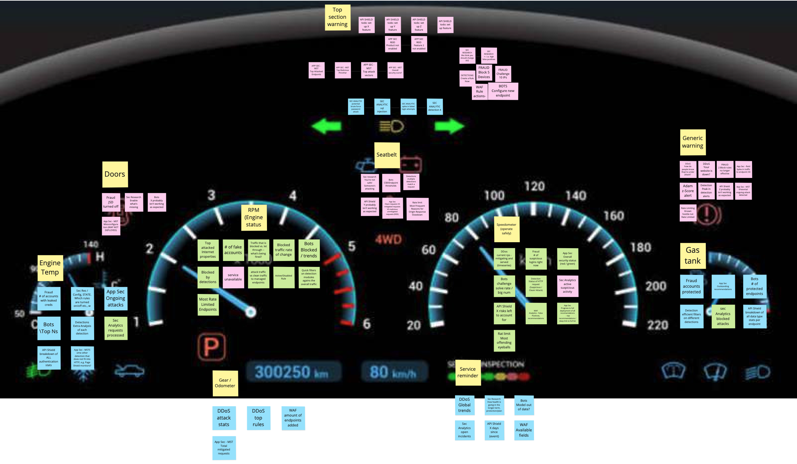
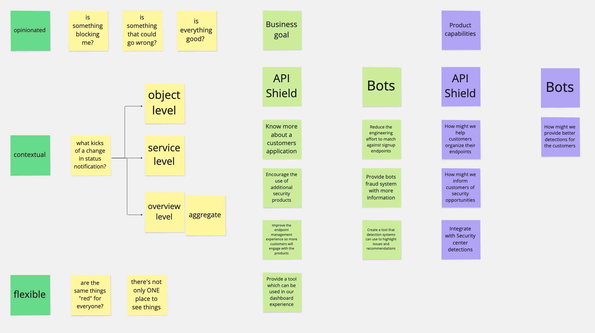
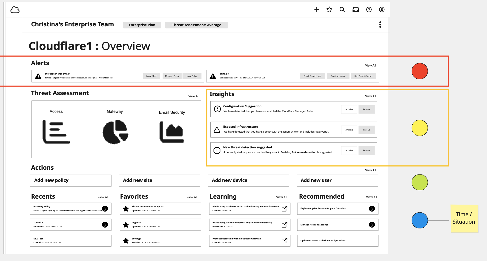
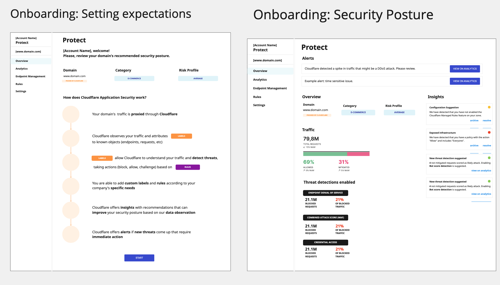
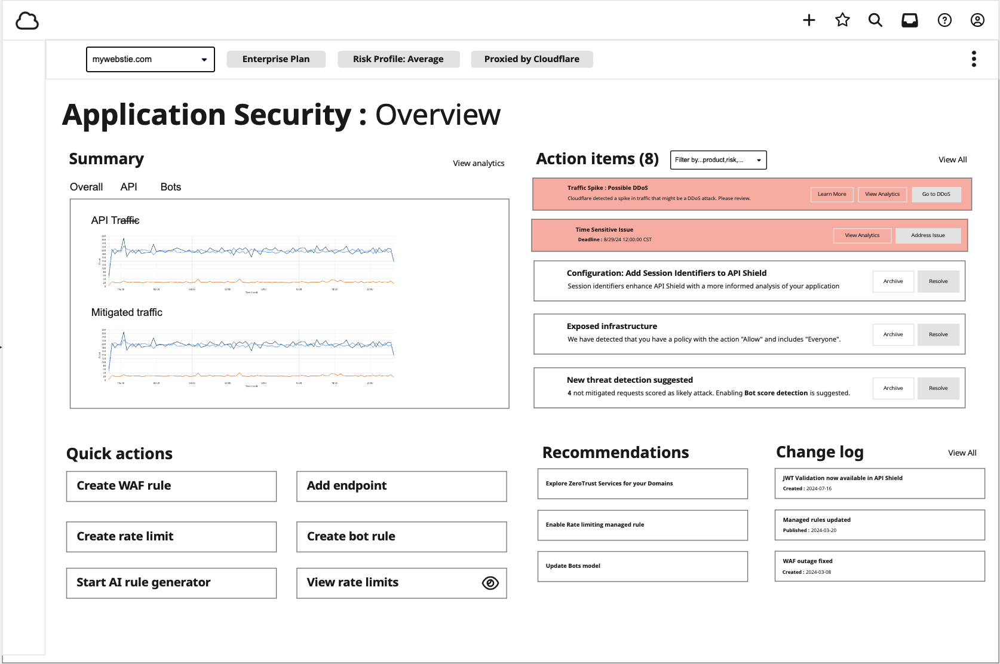

AppSec Overview
Cloudflare has a suite of application security products including WAF, Bot Management, API Shield, DDoS Protection, and more. Each lived in its own corner of the dashboard. Customers had no shared starting point. Nowhere to land, see their security posture, and understand what actually needed their attention.
This project started as a landing page for API Shield. Even before it was officially kicked off, there were discussions about how to land customers and guide them toward problems and solutions. When the Unification initiative launched, it became clear the page had to be more universal, covering all AppSec products and serving as the entry point for the restructured navigation.
What “Overview” Even Means
The first question wasn’t how to design the page, it was what the page should actually be. There were a lot of opinions. Was it for traffic metrics? We had analytics pages for that. Was it for alerts? We had Security Insights. Was it for onboarding documentation? All reasonable answers. All different pages.
To get aligned, we ran a workshop with stakeholders from every AppSec product area using a car dashboard as the framing. A dashboard is a tool people use to understand their vehicle’s current status and make adjustments under pressure. The analogy helped us separate what you need at a glance from what belongs one level deeper.

Out of that workshop we identified four common categories: Status, Alerts, Insights, and Recommendations. That framework became the structure of the design and the shared language we used in stakeholder discussions going forward.

Research & Validation
From there, we turned to validation before locking in a direction.
For competitive analysis, we used competing security dashboards directly where we could and worked through YouTube walkthroughs and documentation for platforms we couldn’t access. The pattern held: data-heavy overviews were hard to act on; the ones built around action got used.

We talked to our CSE team. Asking questions and showing small prototypes, we found that detailed metrics were less important than action-oriented guidance. CSEs had common remediation patterns they walked customers through repeatedly that could be reduced if the overview surfaced the right information upfront. They also gave useful feedback on terminology. Always include a way to get more detail, because customers understand something like “mitigated attacks” differently.
We also ran a small unmoderated research study with Cloudflare customers. Users responded more to the tangible elements on the page like rule activity and the traffic bar. The action items were harder to connect with, which we expected — they’re most useful when they’re based on real traffic and configuration. The feedback pointed toward tying suggestions to actual product data, not abstract health scores.
The Direction
Everything pointed the same direction: the page should not be a data dump. The goal was that within 30 seconds of landing, a customer should be able to tell if something needs attention and know what to do about it.
That meant focusing on clear problems and clear actions. We prioritized a traffic summary showing mitigated, served by Cloudflare, and served by origin traffic at a high level. A Security Posture section with contextual suggestions backed by real product data. Detection Settings showing what was on and what was off. And Rules Activity showing the most active and recently modified rules as a signal for what was working.
Unification also added scope. The Overview would serve as the landing page for a restructured navigation covering all AppSec products under a single Security section. New users would opt in through a modal, a more gradual rollout given how much was changing at once.



The Experience
The shipped page leads with the traffic summary, moves into Security Posture with contextual suggestions, then shows Detection Settings and Rules Activity below. Each suggestion includes customer-specific data so it’s clear why it’s being surfaced.

Clicking a suggestion opens a detail panel with the relevant data, context, and a direct path to act on it.

Results
We measured through Amplitude at two weeks post-launch. Suggestions converted at a higher rate than expected:
- 47% average suggestion conversion rate across all active suggestions
- Block AI bots was clicked by 12,391 unique users and 48% followed through
- Update bots model had the highest conversion at 75.7%
- Managed Rules log mode converted at 60%
Suggestions based on real configurations drove action. The page worked best when the data behind a recommendation was specific and visible.
Related Links
Security posture management for Cloudflare’s application security suite. The launch blog post covering the Security Overview and posture management.
A new application security experience. The blog post covering the Unification navigation restructure.
Security Overview dashboard. An earlier iteration of the zone-level security overview — a direct predecessor to this work.
Account WAF GA. The account-level WAF launch, part of the broader AppSec unification initiative.
// More Work
View all projects